소방설비기사(기계분야) (2017-03-05 기출문제)
1과목: 소방원론
1. 분말소화약제 중 탄산수소칼륨(KHCO3)과 요소(CO(NH2)2)와의 반응물을 주성분으로 하는 소화약제는?
- 제1종 분말
- 제2종 분말
- 제3종 분말
- 제4종 분말
(정답률: 63%)

2. 할론(Halon) 1301의 분자식은?
- CH3Cl
- CH3Br
- CF3Cl
- CF3Br
(정답률: 73%)
3. 유류 저장탱크의 화재에서 일어날 수 있는 현상이 아닌 것은?
- 플래시 오버(Flash Over)
- 보일 오버(Boil Over)
- 슬롭 오버(Slop Over)
- 후로스 오버(Froth Over)
(정답률: 68%)
4. 건축물 화재 시 피난자들의 집중으로 패닉(panic) 현상이 일어날 수 있는 피난방향은?
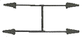
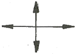
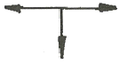
(정답률: 75%)
5. 섭씨 30도는 랭킨(Rankine)온도로 나타내면 몇 도인가?
- 546도
- 515도
- 498도
- 463도
(정답률: 59%)
6. A급, B급, C급 화재에 사용이 가능한 제3종 분말 소화약제의 분자식은?
- NaHCO3
- KHCO3
- NH4H2PO4
- Na2CO3
(정답률: 77%)
7. 1기압, 100℃에서의 물 1g 의 기화잠열은 약 몇 cal 인가?
- 425
- 539
- 647
- 734
(정답률: 76%)
8. 건축방화계획에서 건축구조 및 재료를 불연화하여 화재를 미연에 방지하고자 하는 공간적 대응방법은?
- 회피성대응
- 도피성 대응
- 대항성 대응
- 설비적 대응
(정답률: 52%)
9. 물질의 연소범위와 화재 위험도에 대한 설명으로 틀린 것은?
- 연소범위의 폭이 클수록 화재 위험이 높다.
- 연소범위의 하한계가 낮을수록 화재 위험이 높다.
- 연소범위의 상한계가 높을수록 화재 위험이 높다.
- 연소범위의 하한계가 높을수록 화재 위험이 높다
(정답률: 74%)
10. 다음 중 착화온도가 가장 낮은 것은?
- 에틸알코올
- 톨루엔
- 등유
- 가솔린
(정답률: 46%)
11. 위험물의 저장 방법으로 틀린 것은?
- 금속나트륨 – 석유류에 저장
- 이황화탄소 – 수조 물탱크에 저장
- 알킬알루미늄 – 벤젠액에 희석하여 저장
- 산화프로필렌 – 구리 용기에 넣고 불연성 가스를 봉입하여 저장
(정답률: 55%)
12. 소화약제의 방출수단에 대한 설명으로 가장 옳은 것은?
- 액체 화학반응을 이용하여 발생되는 열로 방출한다.
- 기체의 압력으로 폭발, 기화작용 등을 이용하여 방출한다.
- 외기의 온도, 습도, 기압 등을 이용하여 방출한다.
- 가스압력, 동력, 사람의 손 등에 의하여 방출한다.
(정답률: 73%)
13. 가연물의 제거와 가장 관련이 없는 소화방법은?
- 촛불을 입김으로 불어서 끈다.
- 산불 화재 시 나무를 잘라 없앤다.
- 팽창 진주암을 사용하여 진화한다.
- 가스화재 시 중간밸브를 잠근다.
(정답률: 75%)
14. 연기의 감광계수(m-1)에 대한 설명으로 옳은 것은?
- 0.5는 거의 앞에 보이지 않을 정도이다.
- 10은 화재 최성기 때의 농도이다.
- 0.5는 가시거리가 20~30m 정도이다.
- 10은 연기감지기가 작동하기 직전의 농도이다.
(정답률: 67%)
15. 다음 중 가연성 가스가 아닌 것은?
- 일산화탄소
- 프로판
- 아르곤
- 수소
(정답률: 72%)
16. 할론 가스 45kg 과 함께 기동가스로 질소 2kg을 충전하였다. 이 때 질소가스의 몰분율은?(단, 할론가스의 분자량은 149이다.)
- 0.19
- 0.24
- 0.31
- 0.39
(정답률: 44%)
17. 고층 건축물 내 연기거동 중 굴뚝효과에 영향을 미치는 요소가 아닌 것은?
- 건물 내 · 외의 온도차
- 화재실의 온도
- 건물의 높이
- 층의 면적
(정답률: 61%)
18. B급 화재 시 사용할 수 없는 소화방법은?
- CO2 소화약제로 소화한다.
- 봉상 주수로 소화한다.
- 3종 분말약제로 소화한다.
- 단백포로 소화한다.
(정답률: 68%)
19. 인화성 액체의 연소점, 인화점, 발화점을 온도가 높은 것부터 옭게 나열한 것은?
- 발화점> 연소점> 인화점
- 연소점> 인화점> 발화점
- 인화점> 발화점> 연소점
- 인화점> 연소점> 발화점
(정답률: 58%)
20. 소화효과를 고려하였을 경우 화재 시 사용할 수 있는 물질이 아닌 것은?
- 이산화탄소
- 아세틸렌
- Halon 1211
- Halon 1301
(정답률: 75%)
2과목: 소방유체역학
21. 다음 중 펌프를 직렬 운전해야 할 상황으로 가장 적절한 것은?
- 유량의 변화가 크고 1대로는 유량이 부족할 때
- 소요되는 양정이 일정하지 않고 크게 변동될 때
- 펌프에 폐입 현상이 발생할 때
- 펌프에 무구속속도(run away speed)가 나타날 때
(정답률: 65%)
22. 펌프 운전 중 발생하는 수격작용의 발생을 예방하기 위한 방법에 해당되지 않는 것은?
- 밸브를 가능한 펌프 송출구에서 멀리 설치한다.
- 서지탱크를 관로에 설치한다.
- 밸브의 조작을 천천히 한다.
- 관 내의 유속을 낮게 한다.
(정답률: 62%)
23. 그림과 같이 반지름이 0.8m이고 폭이2m인 곡면 AB가 수문으로 이용된다. 물에 의한 힘의 수평성분의 크기는 약 몇 kN인가? (단, 수문의 폭은 2m 이다.)
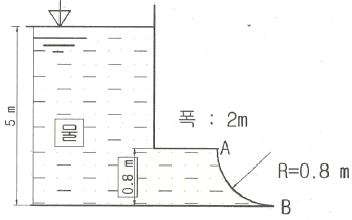
- 72.1
- 84.7
- 90.2
- 95.4
(정답률: 49%)
24. 베르누이 방정식을 적용할 수 있는 기본 전제조건으로 옳은 것은?
- 비압축성 흐름, 점성 흐름, 정상 유동
- 압축성 흐름, 비점성 흐름, 정상 유동
- 비압축성 흐름, 비점성 흐름, 비정상 유동
- 비압축성 흐름, 비점성 흐름, 정상 유동
(정답률: 64%)
25. 그림과 같이 매끄러운 유리관에 물이 채워져 있을 때 모세관 상승높이 h는 약 몇 m인가?
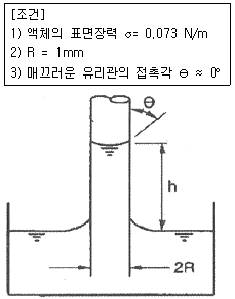
- 0.007
- 0.015
- 0.07
- 0.15
(정답률: 52%)
26. 공기 10kg과 수증기 1kg이 혼합되어 10m3의 용기 안에 들어있다. 이 혼합 기체의 온도가 60℃라면, 이 혼합 기체의 압력은 약 몇 kPa 인가? (단, 수증기 및 공기의 기체상수는 각각 0.462 및 0.287kJ/(kg·K)이고 수증기는 모두 기체 상태이다.)
- 95.6
- 111
- 126
- 145
(정답률: 48%)
27. 파이프 내에 정상 비압축성 유동에 있어서 관마찰계수는 어떤 변수들의 함수인가?
- 절대조도와 관지름
- 절대조도와 상대조도
- 레이놀즈수와 상대조도
- 마하수와 코우시수
(정답률: 70%)
28. 점성계수의 단위로 사용되는 푸아즈(Poise)의 환산 단위로 옳은 것은?
- cm2/s
- N·s2/m2
- dyne/cm·s
- dyne·s/cm2
(정답률: 52%)
29. 3m/s의 속도로 물이 흐르고 있는 관로 내에 피토관을 삽입하고, 비중 1.8의 액체를 넣은 시차액주계에서 나타나게 되는 액주차는 약 몇 m 인가?
- 0.191
- 0.573
- 1.41
- 2.15
(정답률: 40%)
30. 지름이 5cm인 원형 관 내에 어떤 이상기체가 흐르고 있다. 다음 보기 중 이 기체의 흐름이 층류이면서 가장 빠른 속도는? (단, 이 기체의 절대압력은 200kPa, 온도는 27℃, 기체상수는 2080J/(kg·K), 점성계수는 2×10-5Nㆍs/m2, 층류에서 하임계 레이놀즈 값은 2200으로 한다.)
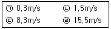
- ㉠
- ㉡
- ㉢
- ㉣
(정답률: 51%)
31. 아래 그림과 같은 탱크에 물이 들어있다. 물이 탱크의 밑면에 가하는 힘은 약 몇 N 인가?(단 물의 밀도는 1000kg/m3, 중력가속도는 10m/s2로 가정하며 대기압은 무시한다. 또한 탱크의 폭은 전체가 1m로 동일하다.)
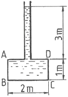
- 40000
- 20000
- 80000
- 60000
(정답률: 55%)
32. 압력 200kPa, 온도 60℃의 공기 2kg이 이상적인 폴리트로픽 과정으로 압축되어 압력 2MPa, 온도 250℃로 변화하였을 때 이 과정 동안 소요된 일의 양은 약 몇 kJ인가?(단, 기체상수는 0.287kJ/(kg·K)이다.)
- 224
- 327
- 447
- 560
(정답률: 32%)
33. 표면적이 A, 절대온도가 T1인 흑체와 절대 온도가 T2인 흑체 주위 밀폐 공간 사이의 열전달량은?
- T1 - T2에 비례한다.
- T21 - T22에 비례한다.
- T31 - T32에 비례한다.
- T41 - T42에 비례한다.
(정답률: 60%)
34. 그림과 같이 수평면에 대하여 60°기울어진 경사관에 비중(S)이 13.6인 수은이 채워져 있으며, A와 B에는 물이 채워져 있다. A의 압력이 250kPa, B의 압력이 200kPa일 때, 길이 L은 약 몇 cm인가?
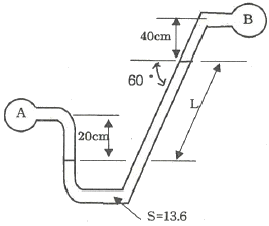
- 33.3
- 38.2
- 41.6
- 45.1
(정답률: 48%)
35. 압력 0.1 MPa, 온도 250℃ 상태인 물의 엔탈피가 2974.33 kJ/kg이고 비체적은 2.40604 m3/kg이다. 이 상태에서 물의 내부 에너지(kJ/kg)는?
- 2733.7
- 2974.1
- 3214.9
- 3582.7
(정답률: 34%)
36. 길이가 400m 이고 유동단면이 20cm x 30cm인 직사각형 관에 물이 가득 차서 평균속도 3m/s로 흐르고 있다. 이 때 손실수두는 약 몇 m인가? (단, 관마찰계수는 0.01 이다.)
- 2.38
- 4.76
- 7.65
- 9.52
(정답률: 40%)
37. 안지름 100mm인 파이프를 통해 2m/s의 속도로 흐르는 물의 질량유량은 약 몇 kg/min인가?
- 15.7
- 157
- 94.2
- 942
(정답률: 40%)
38. 유량이 0.6m3/min일 때 손실수도가 5m인 관로를 통하여 10m 높이 위에 있는 저수조로 물을 이송하고자 한다. 펌프의 효율이 85%라고 할 때 펌프에 공급해야 하는 전력은 약 몇 kW인가?
- 0.58
- 1.15
- 1.47
- 1.73
(정답률: 54%)
39. 대기의 압력이 1.08kgf/cm2였다면 게이지 압력이 12.5kgf/cm2인 용기에서 절대압력(kgf/cm2)은?
- 12.50
- 13.58
- 11.42
- 14.50
(정답률: 65%)
40. 시간 △t 사이에 유체의 선운동량이 △P 만큼 변했을 때 △P/△t는 무엇을 뜻하는가?
- 유체 운동량의 변화량
- 유체 충격량의 변화량
- 유체의 가속도
- 유체에 작용하는 힘
(정답률: 47%)
3과목: 소방관계법규
41. 소방특별조사의 연기를 신청하려는 자는 소방특별조사 시작 며칠 전까지 국민안전처 장관, 소방본부장 또는 소방서장에게 소방 특별조사 연기신청서에 증명서류를 첨부하여 제출해야 하는가?(단, 천재지변 및 그 밖에 대통령령으로 정하는 사유로 소방특별조사를 받기 곤란한 경우이다.)(관련 규정 개전전 문제로 국민안전처 장관이 아닌 행정안전부장관입니다. 참고하시어 문제 푸시기 바랍니다.)
- 3
- 5
- 7
- 10
(정답률: 44%)
42. 화재예방, 소방시설 설치∙유지 및 안전관리에 관한 법률상 특정소방대상물 중 오피스텔이 해당하는 것은?
- 숙박시설
- 업무시설
- 공동주택
- 근린생활시설
(정답률: 71%)
43. 옥내 저장소의 위치∙구조 및 설비의 기준 중 지정수량의 몇 배 이상의 저장창고(제6류 위험물의 저장창고 제외(에 피뢰침을 설치해야 하는가? (단, 저장창고 주위의 상황이 안전상 지장이 없는 경우는 제외한다.)
- 10배
- 20배
- 30배
- 40배
(정답률: 61%)
44. 지정수량 미만인 위험물의 저장 또는 취급에 관한 기술상의 기준은 무엇으로 정하는가?
- 대통령령
- 총리령
- 국민안전처장관령
- 시∙도의 조례
(정답률: 56%)
45. 특정소방대상물의 증축 되는 경우 기존 부분에 대해서 증축 당시의 소방시설의 설치에 관한 대통령령 또는 화재안전기준을 적용하지 않는 경우가 아닌 것은?
- 증축으로 인하여 천장∙바닥∙벽 등에 고정되어 있는 가연성 물질의 양이 줄어드는 경우
- 자동차 생산공장 등 화재 위험이 낮은 특정소방대상물 내부에 연면적 33m2이하의 직원 휴게실을 증축하는 경우
- 기존 부분과 증축 부분이 갑종 방화문(국토교통부장관이 정하는 기준에 적합한 자동방화셔터를 포함)으로 구획되어 있는 경우
- 자동차 생산공장 등 화재 위험이 낮은 특정소방대상물에 캐노피(3면 이상에 벽이 없는 구조의 캐노피)를 설치하는 경우
(정답률: 47%)
46. 소방용수시설 급수탑 개폐밸브의 설치기준으로 옳은 것은?
- 지상에서 1.0m 이상 1.5m 이하
- 지상에서 1.5m 이상 1.7m 이하
- 지상에서 1.2m 이상 1.8m 이하
- 지상에서 1.5m 이상 2.0m 이하
(정답률: 65%)
47. 국민안전처장관, 소방본부장 또는 소방서장이 소방특별조사 조치명령서를 해당 소방대상물의 관계인에게 발급하는 경우가 아닌 것은?(관련 규정 개정전 문제로 여기서는 기존 정답인 1번을 누르면 정답 처리됩니다. 자세한 내용은 해설을 참고하세요.)
- 소방대상물의 신축
- 소방대상물의 개수
- 소방대상물의 이전
- 소방대상물의 제거
(정답률: 64%)
48. 성능위주설계를 실시하여야 하는 특정소방대상물의 범위 기준으로 틀린 것은?
- 연면적 200000m2 이상인 특정소방대상물(아파트등은 제외)
- 지하층을 포함한 층수가 30층 이상인 특정소방대상물(아파트등은 제외)
- 건축물의 높이가 100m 이상인 특정소방대상물(아파트등은 제외)
- 하나의 건축물에 영화상영관이 5개 이상인 특정소방대상물
(정답률: 61%)
49. 시장지역에서 화재로 오인할 만한 우려가 있는 불을 피우거나 연막소독을 하려는 자가 소방본부장 또는 소방서장에게 신고를 하지 아니하여 소방자동차를 출동하게 한 자에 대한 과태로 부과금액 기준으로 옳은 것은?
- 20만원 이하
- 50만원 이하
- 100만원 이하
- 200만원 이하
(정답률: 51%)
50. 대통령령 또는 화재안전기준이 변경되어 그 기준이 강화되는 경우에 기존 특정소방 대상물의 소방시설에 대하여 변경으로 강화된 기준을 적용하여야 하는 소방시설은?
- 비상경보설비
- 비상콘센트설비
- 비상방송설비
- 옥내소화전설비
(정답률: 61%)
51. 다음 조건을 참고하여 숙박시설이 있는 특정소방대상물의 수용인원 산정 수로 옳은 것은?
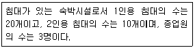
- 33
- 40
- 43
- 46
(정답률: 72%)
52. 출동한 소방대의 화재진압 및 인명구조∙구급 등 소방활동 방해에 따른 벌칙이 5년이하의 징역 또는 3000만원 이하의 벌금에 처하는 행위가 아닌 것은?(관련 규정 개정전 문제로 여기서는 기존 정답인 2번을 누르면 정답 처리됩니다. 자세한 내용은 해설을 참고하세요.)
- 위력을 사용하여 출동한 소방대의 구급활동을 방해하는 행위
- 화재진압을 마치고 소방서로 복귀중인 소방자동차의 통행을 고의로 방해하는 행위
- 출동한 소방대원에게 협박을 행사하여 구급활동을 방해하는 행위
- 출동한 소방대의 소방장비를 파손하거나 그 효용을 해아여 구급활동을 방해하는 행위
(정답률: 68%)
53. 대통령령으로 정하는 특정소방대상물 소방시설 공사의 완공검사를 위하여 소방본부장이나 소방서장의 현장확인 대상 범위가 아닌 것은?
- 문화 및 집회시설
- 수계 소화설비가 설치되는 것
- 연면적 10000m2 이상이거나 11층 이상인 특정소방대상물(아파트는 제외)
- 가연성가스를 제조∙저장 또는 취급하는 시설 중 지상에 노출된 가연성가스탱크의 저장용량 합계가 1000톤 이상인 시설
(정답률: 54%)
54. 관계인이 예방규정을 정하여야 하는 제조소등의 기준이 아닌 것은?
- 지정수량의 10배 이상의 위험물을 취급하는 제조소
- 지정수량의 50배 이상의 위험물을 저장하는 옥외저장소
- 지정수량의 150배 이상의 위험물을 저장하는 옥내저장소
- 지정수량의 200배 이상의 위험물을 저장하는 옥외탱크저장소
(정답률: 58%)
55. 소방본부장 또는 소방서장은 건축허가등의 동의요구서류를 접수한 날부터 최대 며칠 이내에 건축허가등의 동의여부를 회신하여야 하는가? (단, 허가 신청한 건축물은 지상으로부터 높이가 200m인 아파트이다.)
- 5일
- 7일
- 10일
- 15일
(정답률: 54%)
56. 소화난이도등급 Ⅲ인 지하탱크저장소에 설치 하여야 하는 소화설비의 설치기준으로 옳은 것은?
- 능력단위 수치가 3 이상의 소형 수동식소화기등 1개 이상
- 능력단위 수치가 3 이상의 소형 수동식소화기등 2개 이상
- 능력단위 수치가 2 이상의 소형 수동식소화기등 1개 이상
- 능력단위 수치가 2 이상의 소형 수동식소화기등 2개 이상
(정답률: 56%)
57. 총리령으로 정하는 고급감리원 이상의 소방공사 감리원의 소방시설공사 배치 현장기준으로 옳은 것은?(관련 규정 개정전 문제로 여기서는 기존 정답인 2번을 누르면 정답 처리됩니다. 자세한 내용은 해설을 참고하세요.)
- 연면적 5000m2 이상 30000m2 미만인 특정소방대상물의 공사 현장
- 연면적 30000m2 이상 200000m2 미만인 아파트의 공사 현장
- 연면적 30000m2 이상 200000m2 미만인 특정소방대상물(아파트는 제외)의 공사 현장
- 연면적 200000m2 이상인 특정소방대상물의 공사 현장
(정답률: 56%)
58. 소방시설업에 대한 행정처분 기준 중 1차 처분이 영업정지 3개월이 아닌 경우는?
- 국가, 지방자체단체 또는 공공기관이 발주하는 소방시설의 설계∙감리업자 선정에 따른 사업수행능력 평가에 관한 서류를 위조하거나 변조하는 등 거짓이나 그 밖의 부정한 방법으로 입찰에 참여한 경우
- 소방시설업의 감독을 위하여 필요한 보고나 자료제출 명령을 위반하여 보고 또는 자료 제출을 하지 아니하거나 거짓으로 보고 또는 자료제출을 한 경우
- 정당한 사유 없이 출입∙검사업무에 따른 관계 공무원의 출입 또는 검사∙조사를 거부∙방해 또는 기피한 경우
- 감리업자의 감리 시 소방시설공사가 설계도서에 맞지 아니하여 공사업자에게 공사의 시정 또는 보완 등의 요구를 하였으나 따르지 아니한 경우
(정답률: 33%)
59. 소방시설기준 적용의 특례 중 특정소방대상물의 관계인이 소방시설을 갖추어야 함에도 불구하고 관련 소방시설을 설치하지 아니할 수 있는 소방시설의 범위로 옳은 것은?(단, 화재 위험도가 낮은 특정소방대상물로서 석재, 불연성금속, 불연성 건축재료 등의 가공공장∙기계조립공장∙주물공장 도는 불연성 물품을 저장하는 창고이다.)
- 옥외소화전 및 연결살수설비
- 연결송수관설비 및 상수도소화용수설비
- 자동화재탐지설비, 상수도소화용수설비 및 연결살수설비
- 스프링클러설비, 상수도소화용수설비 및 연결살수설비
(정답률: 38%)
60. 우수품질인증을 받지 아니한 제품에 우수품질 인증 표시를 하거나 우수품질인증 표시를 위조 또는 변조하여 사용한 자에 대한 벌칙기준은?(관련 규정 개정전 문제로 여기서는 기존 정답인 3번을 누르면 정답 처리됩니다. 자세한 내용은 해설을 참고하세요.)
- 100만원 이하의 벌금
- 200만원 이하의 벌금
- 300만원 이하의 벌금
- 500만원 이하의 벌금
(정답률: 62%)
4과목: 소방기계시설의 구조 및 원리
61. 옥내소화전설비 수원을 산출된 유효수량 외에 유효수량의 1/3 이상을 옥상에 설치해야 하는 경우는?
- 지하층만 있는 건축물
- 건축물의 높이가 지표면으로부터 15m인 경우
- 수원이 건축물의 최상층에 설치된 방수구보다 높은 위치에 설치된 경우
- 주펌프와 동등 이상의 성능이 있는 별도의 펌프로서 내연기관의 기동돠 연동하여 작동되거나 비상전원을 연결하여 설치한 경우
(정답률: 56%)
62. 조기반응형 스프링클러헤드를 설치해야 하는 장소가 아닌 것은?
- 공동주택의 거실
- 수련시설의 침실
- 오피스텔의 침실
- 병원의 입원실
(정답률: 52%)
63. 특정소방대상물별 소화기구의 능력단위기준 중 다음( ) 안에 알맞은 것은? (단, 건축물의 주요구조부는 내화구조가 아니고 벽 및 반자의 실내에 면하는 부분이 불연재료∙준불연재료 또는 난연재료로 된 특정소방대상물이 아니다.)
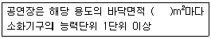
- 30
- 50
- 100
- 200
(정답률: 56%)
64. 상수도소화용수설비 소화전의 설치기준 중 다음 ( ) 안에 알맞은 것은?
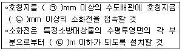
- ㉠ 65, ㉡ 120, ㉢ 160
- ㉠ 75, ㉡ 100, ㉢ 140
- ㉠ 80, ㉡ 90, ㉢ 140
- ㉠ 100, ㉡ 100, ㉢ 180
(정답률: 76%)
65. 청정소화약제소화설비의 분사헤드에 대한 설치기준 중 다음 ( ) 안에 알맞은 것은?(단, 분사헤드의 성능인증 범위 내에서 설치하는 경우는 제외한다.)(관련 규정 개정전 문제로 여기서는 기존 정답인 1번을 누르면 정답 처리됩니다. 자세한 내용은 해설을 참고하세요.)
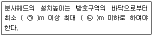
- ㉠ 0.2, ㉡ 3.7
- ㉠ 0.8, ㉡ 1.5
- ㉠ 1.5, ㉡ 2.0
- ㉠ 2.0, ㉡ 2.5
(정답률: 54%)
66. 완강기의 최대사용하중은 몇 N 이상의 하중이어야 하는가?
- 800
- 1000
- 1200
- 1500
(정답률: 75%)
67. 물분무소화설비를 설치하는 차고 또는 주차장의 배수설비 설치기준으로 틀린 것은?
- 차량이 주차하는 바닥은 배수구를 향해 1/100 이상의 기울기를 유지할 것
- 배수구에서 새어나온 기름을 모아 소화할 수 있도록 길이 40m 이하마다 집수관, 소화핏트등 기름분리장치를 설치 할 것
- 차량이 주차하는 장소의 적당한 곳에 높이 10cm 이상의 경계턱으로 배수구를 설치할 것
- 배수설비는 가압송수장치의 최대송수능력의 수량을 유효하게 배수살 수 있는 크기 및 기울기로 할 것
(정답률: 71%)
68. 스프링클러설비 배관의 설치기준으로 틀린 것은?
- 급수배관의 구경은 수리계산에 따르는 경우 가지배관의 유속은 6m/s, 그 밖의 배관의 유속은 10m/s를 초과할 수 없다.
- 연결송수관설비의 배관과 겸용할 경우의 주배관은 구경 100mm 이상, 방수구로의 연결되는 배관의 구경은 65mm 이상의 것으로 하여야 한다.
- 수직배수배관의 구경은 50mm 이상으로 하여야 한다.
- 가지배관에는 헤드의 설치지점 사이마다 1개 이상의 행가를 설치하되, 헤드간의 거리가 4.5m를 초과하는 경우에는 4.5m 이내마다 1개 이상 설치해야 한다.
(정답률: 48%)
69. 포소화설비의 자동식 기동장치로 폐쇄형 스프링클러헤드를 사용하는 경우의 설치기준 중 다음( ) 안에 알맞은 것은?
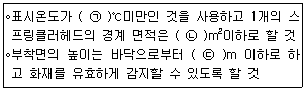
- ㉠ 60, ㉡ 10, ㉢ 7
- ㉠ 60, ㉡ 20, ㉢ 7
- ㉠ 79, ㉡ 10, ㉢ 5
- ㉠ 79, ㉡ 20, ㉢ 5
(정답률: 66%)
70. 할로겐화합물 소화약제 저장용기의 설치기준 중 다음 ( ) 안에 알맞은 것은?
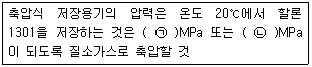
- ㉠ 2.5, ㉡ 4.2
- ㉠ 2.0, ㉡ 3.5
- ㉠ 1.5, ㉡ 3.0
- ㉠ 1.1, ㉡ 2.5
(정답률: 60%)
71. 대형소화기의 정의 중 다음 ( ) 안에 알맞은 것은?
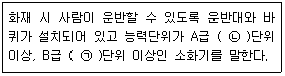
- ㉠ 20, ㉡ 10
- ㉠ 10, ㉡ 5
- ㉠ 5, ㉡ 10
- ㉠ 10, ㉡ 20
(정답률: 31%)
72. 연결살수설비 배관의 설치기준 중 하나의 배관에 부착하는 살수헤드의 개수가 3개 인 경우 배관의 구경은 최소 몇 mm 이상으로 설치해야 하는가?(단, 연결살수설비 전용헤드를 사용하는 경우이다.)
- 40
- 50
- 65
- 80
(정답률: 58%)
73. 연소방지설비 방수헤드의 설치기준 중 살수구역은 환기구 등을 기준으로 지하구의 길이방향으로 몇 m 이내마다 1개 이상 설치하여야 하는가?(2021년 01월 15일 개정된 규정 적용됨)
- 150
- 350
- 700
- 1000
(정답률: 55%)
74. 110kV 초과 154kV 이하의 고압전기기기와 물분무헤드 사이에 최소 이격거리는 몇 cm 인가?
- 110
- 150
- 180
- 210
(정답률: 72%)
75. 특정소방대상물의 용도 및 장소별로 설치해야 할 인명구조기구의 기준으로 틀린 것은?
- 지하가 중 지하상가는 인공소생기를 층마가 2개 이상 비치할 것
- 판매시설 중 대규모 점포는 공기호흡기를 층마다 2개 이상 비치할 것
- 지하층을 포함하는 층수가 7층 이상인 관광호텔은 방열복, 공기호흡기, 인공소생기를 각 2개 이상 비치할 것
- 물분무등소화설비 중 이산화탄소 소화설비를 설치해야 하는 특정소방대상물은 공기호흡기를 이산화탄소 소화설비가 설치된 장소의 출입구 인근에 1대 이상 비치할 것
(정답률: 54%)
76. 제연설비 설치장소의 제연구역 구획 기준으로 틀린 것은?
- 하나의 제연구역의 면적은 1000m2 이내로 할 것
- 하나의 제연구역은 직경 60m 원내에 들어갈 수 있을 것
- 하나의 제연구역은 3개 이상 층에 미치지 아니하도록 할 것
- 통로상의 제연구역은 보행중심선의 길이가 60m를 초과하지 아니할 것
(정답률: 68%)
77. 물분무소화설비의 설치 장소별 1m2에 대한 수원의 최소 저수량으로 옳은 것은?
- 케이블트레이: 12L/min×20분×투영된 바닥면적
- 절연유 봉입 변압기: 15L/min×20분×바닥 부분을 제외한 표면적을 합한 면적
- 차고: 30L/min×20분×바닥면적
- 콘베이어 벨트: 37L/min×20분×벨트부분의 바닥면적
(정답률: 71%)
78. 개방형스프링클러설비의 일제개방밸브가 하나의 방수구역을 담당하는 헤드의 최대 개수는?(단, 2개 이상의 방수구역으로 나눌 경우는 제외한다.)
- 60
- 50
- 30
- 25
(정답률: 67%)
79. 분말소화설비의 저장용기에 설치된 밸브 중 잔압 방출 시 개방∙폐쇄 상태로 옳은 것은?
- 가스도입밸브 – 폐쇄
- 주밸브(방출밸브) - 개방
- 배기밸브 – 폐쇄
- 클리닝밸브 – 개방
(정답률: 46%)
80. 차고∙주차장에 호스릴포소화설비 또는 포소화전설비를 설치할 수 있는 부분이 아닌 것은?(관련 규정 개정전 문제로 여기서는 기존 정답인 2번을 누르면 정답 처리됩니다. 자세한 내용은 해설을 참고하세요.)
- 지상 1층으로서 방화구획 되거나 지붕이 없는 부분
- 지상에서 수동 또는 원격 조작에 따라 개방이 가능한 개구부의 유효면적의 합계가 바닥면적의 10% 이상인 부분
- 옥외로 통하는 개구부가 상시 개방된 구조의 부분으로서 그 개방된 부분의 합계면적이 해당 차고 또는 주차장의 바닥면적의 15% 이상인 부분
- 완전 개방된 옥상주차장 또는 고가 밑의 주차장 등으로서 주된 벽이 없고 기둥뿐이거나 주위가 위해방지용 철주 등으로 둘러싸인 부분
(정답률: 64%)